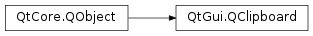

QClipboard¶
Synopsis¶
Functions¶
- def
clear([mode=Clipboard]) - def
image([mode=Clipboard]) - def
mimeData([mode=Clipboard]) - def
ownsClipboard() - def
ownsFindBuffer() - def
ownsSelection() - def
pixmap([mode=Clipboard]) - def
setImage(arg__1[, mode=Clipboard]) - def
setMimeData(data[, mode=Clipboard]) - def
setPixmap(arg__1[, mode=Clipboard]) - def
setText(arg__1[, mode=Clipboard]) - def
supportsFindBuffer() - def
supportsSelection() - def
text([mode=Clipboard]) - def
text(subtype[, mode=QClipboard.Clipboard])
Signals¶
- def
changed(mode) - def
dataChanged() - def
findBufferChanged() - def
selectionChanged()
Detailed Description¶
The
PySide2.QtGui.QClipboardclass provides access to the window system clipboard.The clipboard offers a simple mechanism to copy and paste data between applications.
PySide2.QtGui.QClipboardsupports the same data types thatPySide2.QtGui.QDragdoes, and uses similar mechanisms. For advanced clipboard usage read Drag and Drop .There is a single
PySide2.QtGui.QClipboardobject in an application, accessible asQGuiApplication.clipboard().Example:
clipboard = QGuiApplication.clipboard() originalText = clipboard.text() ... clipboard.setText(newText)
PySide2.QtGui.QClipboardfeatures some convenience functions to access common data types:PySide2.QtGui.QClipboard.setText()allows the exchange of Unicode text andPySide2.QtGui.QClipboard.setPixmap()andPySide2.QtGui.QClipboard.setImage()allows the exchange of QPixmaps and QImages between applications. ThePySide2.QtGui.QClipboard.setMimeData()function is the ultimate in flexibility: it allows you to add anyPySide2.QtCore.QMimeDatainto the clipboard. There are corresponding getters for each of these, e.g.PySide2.QtGui.QClipboard.text(),PySide2.QtGui.QClipboard.image()andPySide2.QtGui.QClipboard.pixmap(). You can clear the clipboard by callingPySide2.QtGui.QClipboard.clear().A typical example of the use of these functions follows:
def paste(self): clipboard = QGuiApplication.clipboard() mimeData = clipboard.mimeData() if mimeData.hasImage(): setPixmap(mimeData.imageData()) elif mimeData.hasHtml(): setText(mimeData.html()) setTextFormat(Qt.RichText) elif (mimeData.hasText(): setText(mimeData.text()) setTextFormat(Qt.PlainText) else: setText(tr("Cannot display data"))
Notes for X11 Users¶
- The X11 Window System has the concept of a separate selection and clipboard. When text is selected, it is immediately available as the global mouse selection. The global mouse selection may later be copied to the clipboard. By convention, the middle mouse button is used to paste the global mouse selection.
- X11 also has the concept of ownership; if you change the selection within a window, X11 will only notify the owner and the previous owner of the change, i.e. it will not notify all applications that the selection or clipboard data changed.
- Lastly, the X11 clipboard is event driven, i.e. the clipboard will not function properly if the event loop is not running. Similarly, it is recommended that the contents of the clipboard are stored or retrieved in direct response to user-input events, e.g. mouse button or key presses and releases. You should not store or retrieve the clipboard contents in response to timer or non-user-input events.
- Since there is no standard way to copy and paste files between applications on X11, various MIME types and conventions are currently in use. For instance, Nautilus expects files to be supplied with a
x-special/gnome-copied-filesMIME type with data beginning with the cut/copy action, a newline character, and the URL of the file.
Notes for macOS Users¶
macOS supports a separate find buffer that holds the current search string in Find operations. This find clipboard can be accessed by specifying theFindBuffermode.
Notes for Windows and macOS Users¶
- Windows and macOS do not support the global mouse selection; they only supports the global clipboard, i.e. they only add text to the clipboard when an explicit copy or cut is made.
- Windows and macOS does not have the concept of ownership; the clipboard is a fully global resource so all applications are notified of changes.
Notes for Universal Windows Platform Users¶
- The Universal Windows Platform only allows to query the clipboard in case the application is active and an application window has focus. Accessing the clipboard data when in background will fail due to access denial.
See also
-
PySide2.QtGui.QClipboard.Mode¶ This enum type is used to control which part of the system clipboard is used by
QClipboard.mimeData(),QClipboard.setMimeData()and related functions.Constant Description QClipboard.Clipboard indicates that data should be stored and retrieved from the global clipboard. QClipboard.Selection indicates that data should be stored and retrieved from the global mouse selection. Support for Selectionis provided only on systems with a global mouse selection (e.g. X11).QClipboard.FindBuffer indicates that data should be stored and retrieved from the Find buffer. This mode is used for holding search strings on macOS . See also
-
PySide2.QtGui.QClipboard.changed(mode)¶ Parameters: mode – PySide2.QtGui.QClipboard.Mode
-
PySide2.QtGui.QClipboard.clear([mode=Clipboard])¶ Parameters: mode – PySide2.QtGui.QClipboard.ModeClear the clipboard contents.
The
modeargument is used to control which part of the system clipboard is used. IfmodeisQClipboard.Clipboard, this function clears the global clipboard contents. IfmodeisQClipboard.Selection, this function clears the global mouse selection contents. IfmodeisQClipboard.FindBuffer, this function clears the search string buffer.See also
QClipboard.ModePySide2.QtGui.QClipboard.supportsSelection()
-
PySide2.QtGui.QClipboard.dataChanged()¶
-
PySide2.QtGui.QClipboard.findBufferChanged()¶
-
PySide2.QtGui.QClipboard.image([mode=Clipboard])¶ Parameters: mode – PySide2.QtGui.QClipboard.ModeReturn type: PySide2.QtGui.QImageReturns the clipboard image, or returns a null image if the clipboard does not contain an image or if it contains an image in an unsupported image format.
The
modeargument is used to control which part of the system clipboard is used. IfmodeisQClipboard.Clipboard, the image is retrieved from the global clipboard. IfmodeisQClipboard.Selection, the image is retrieved from the global mouse selection.
-
PySide2.QtGui.QClipboard.mimeData([mode=Clipboard])¶ Parameters: mode – PySide2.QtGui.QClipboard.ModeReturn type: PySide2.QtCore.QMimeDataReturns a pointer to a
PySide2.QtCore.QMimeDatarepresentation of the current clipboard data (can be NULL if the givenmodeis not supported by the platform).The
modeargument is used to control which part of the system clipboard is used. IfmodeisQClipboard.Clipboard, the data is retrieved from the global clipboard. IfmodeisQClipboard.Selection, the data is retrieved from the global mouse selection. IfmodeisQClipboard.FindBuffer, the data is retrieved from the search string buffer.The
PySide2.QtGui.QClipboard.text(),PySide2.QtGui.QClipboard.image(), andPySide2.QtGui.QClipboard.pixmap()functions are simpler wrappers for retrieving text, image, and pixmap data.Note
The pointer returned might become invalidated when the contents of the clipboard changes; either by calling one of the setter functions or externally by the system clipboard changing.
-
PySide2.QtGui.QClipboard.ownsClipboard()¶ Return type: PySide2.QtCore.boolReturns
trueif this clipboard object owns the clipboard data; otherwise returnsfalse.
-
PySide2.QtGui.QClipboard.ownsFindBuffer()¶ Return type: PySide2.QtCore.boolReturns
trueif this clipboard object owns the find buffer data; otherwise returnsfalse.
-
PySide2.QtGui.QClipboard.ownsSelection()¶ Return type: PySide2.QtCore.boolReturns
trueif this clipboard object owns the mouse selection data; otherwise returnsfalse.
-
PySide2.QtGui.QClipboard.pixmap([mode=Clipboard])¶ Parameters: mode – PySide2.QtGui.QClipboard.ModeReturn type: PySide2.QtGui.QPixmapReturns the clipboard pixmap, or null if the clipboard does not contain a pixmap. Note that this can lose information. For example, if the image is 24-bit and the display is 8-bit, the result is converted to 8 bits, and if the image has an alpha channel, the result just has a mask.
The
modeargument is used to control which part of the system clipboard is used. IfmodeisQClipboard.Clipboard, the pixmap is retrieved from the global clipboard. IfmodeisQClipboard.Selection, the pixmap is retrieved from the global mouse selection.
-
PySide2.QtGui.QClipboard.selectionChanged()¶
-
PySide2.QtGui.QClipboard.setImage(arg__1[, mode=Clipboard])¶ Parameters: - arg__1 –
PySide2.QtGui.QImage - mode –
PySide2.QtGui.QClipboard.Mode
Copies the
imageinto the clipboard.The
modeargument is used to control which part of the system clipboard is used. IfmodeisQClipboard.Clipboard, the image is stored in the global clipboard. IfmodeisQClipboard.Selection, the data is stored in the global mouse selection.This is shorthand for:
data = QMimeData() data.setImageData(image) clipboard.setMimeData(data, mode)
- arg__1 –
-
PySide2.QtGui.QClipboard.setMimeData(data[, mode=Clipboard])¶ Parameters: - data –
PySide2.QtCore.QMimeData - mode –
PySide2.QtGui.QClipboard.Mode
Sets the clipboard data to
src. Ownership of the data is transferred to the clipboard. If you want to remove the data either callPySide2.QtGui.QClipboard.clear()or call again with new data.The
modeargument is used to control which part of the system clipboard is used. IfmodeisQClipboard.Clipboard, the data is stored in the global clipboard. IfmodeisQClipboard.Selection, the data is stored in the global mouse selection. IfmodeisQClipboard.FindBuffer, the data is stored in the search string buffer.The
PySide2.QtGui.QClipboard.setText(),PySide2.QtGui.QClipboard.setImage()andPySide2.QtGui.QClipboard.setPixmap()functions are simpler wrappers for setting text, image and pixmap data respectively.See also
- data –
-
PySide2.QtGui.QClipboard.setPixmap(arg__1[, mode=Clipboard])¶ Parameters: - arg__1 –
PySide2.QtGui.QPixmap - mode –
PySide2.QtGui.QClipboard.Mode
Copies
pixmapinto the clipboard. Note that this is slower thanPySide2.QtGui.QClipboard.setImage()because it needs to convert thePySide2.QtGui.QPixmapto aPySide2.QtGui.QImagefirst.The
modeargument is used to control which part of the system clipboard is used. IfmodeisQClipboard.Clipboard, the pixmap is stored in the global clipboard. IfmodeisQClipboard.Selection, the pixmap is stored in the global mouse selection.- arg__1 –
-
PySide2.QtGui.QClipboard.setText(arg__1[, mode=Clipboard])¶ Parameters: - arg__1 – unicode
- mode –
PySide2.QtGui.QClipboard.Mode
Copies
textinto the clipboard as plain text.The
modeargument is used to control which part of the system clipboard is used. IfmodeisQClipboard.Clipboard, the text is stored in the global clipboard. IfmodeisQClipboard.Selection, the text is stored in the global mouse selection. IfmodeisQClipboard.FindBuffer, the text is stored in the search string buffer.
-
PySide2.QtGui.QClipboard.supportsFindBuffer()¶ Return type: PySide2.QtCore.boolReturns
trueif the clipboard supports a separate search buffer; otherwise returnsfalse.
-
PySide2.QtGui.QClipboard.supportsSelection()¶ Return type: PySide2.QtCore.boolReturns
trueif the clipboard supports mouse selection; otherwise returnsfalse.
-
PySide2.QtGui.QClipboard.text(subtype[, mode=QClipboard.Clipboard])¶ Parameters: - subtype – unicode
- mode –
PySide2.QtGui.QClipboard.Mode
Return type: (retval, subtype)
This is an overloaded function.
Returns the clipboard text in subtype
subtype, or an empty string if the clipboard does not contain any text. Ifsubtypeis null, any subtype is acceptable, andsubtypeis set to the chosen subtype.The
modeargument is used to control which part of the system clipboard is used. IfmodeisQClipboard.Clipboard, the text is retrieved from the global clipboard. IfmodeisQClipboard.Selection, the text is retrieved from the global mouse selection.Common values for
subtypeare “plain” and “html”.Note that calling this function repeatedly, for instance from a key event handler, may be slow. In such cases, you should use the
dataChanged()signal instead.
-
PySide2.QtGui.QClipboard.text([mode=Clipboard]) Parameters: mode – PySide2.QtGui.QClipboard.ModeReturn type: unicode Returns the clipboard text as plain text, or an empty string if the clipboard does not contain any text.
The
modeargument is used to control which part of the system clipboard is used. IfmodeisQClipboard.Clipboard, the text is retrieved from the global clipboard. IfmodeisQClipboard.Selection, the text is retrieved from the global mouse selection. IfmodeisQClipboard.FindBuffer, the text is retrieved from the search string buffer.
© 2018 The Qt Company Ltd. Documentation contributions included herein are the copyrights of their respective owners. The documentation provided herein is licensed under the terms of the GNU Free Documentation License version 1.3 as published by the Free Software Foundation. Qt and respective logos are trademarks of The Qt Company Ltd. in Finland and/or other countries worldwide. All other trademarks are property of their respective owners.